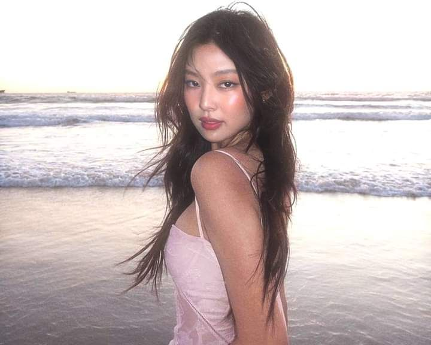

Jennie BLACKPINK Bakal Debut Solo Dalam Naungan Label Pribadi Miliknya!
Tanggal Publikasi: 5 Oktober 2024
Salah satu member BLACKPINK ini akan kembali debut comeback solo pada Juni summer tahun ini. Dikutip dari Media News1, Jennie sudah bersiap merilis album solo pertama dalam naungan label pribadinya yaitu OA (ODD ATELIER) yang didirikannya sejak tahun lalu.
BLACKPINK tetap akan dinaungi oleh YG Entertainment. Namun, untuk kontrak Jennie secara individual dengan YG tidak lagi dilanjutkannya. Jadi, aktivitas Jennie, Lisa, Jisoo, dan Rose sebagai member group BLACKPINK dan segala aktivitasnya masih di bawah agensi YG. Sedangkan aktivitas solo, terutama Jennie akan dikelola oleh OA.
Kembali ke Daftar Berita